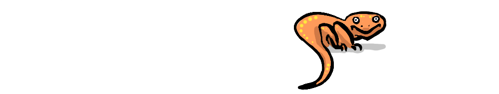
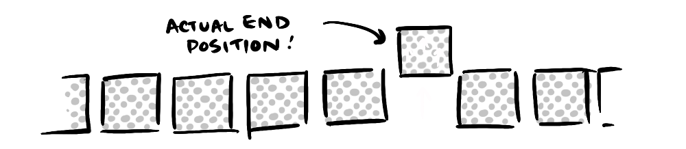
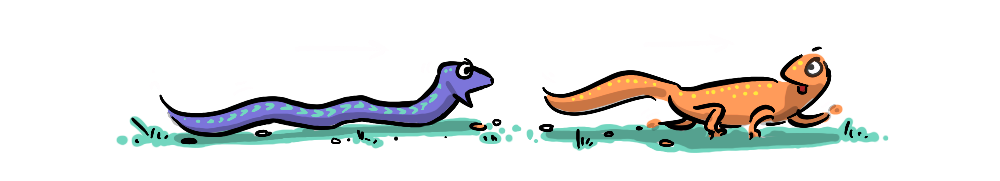
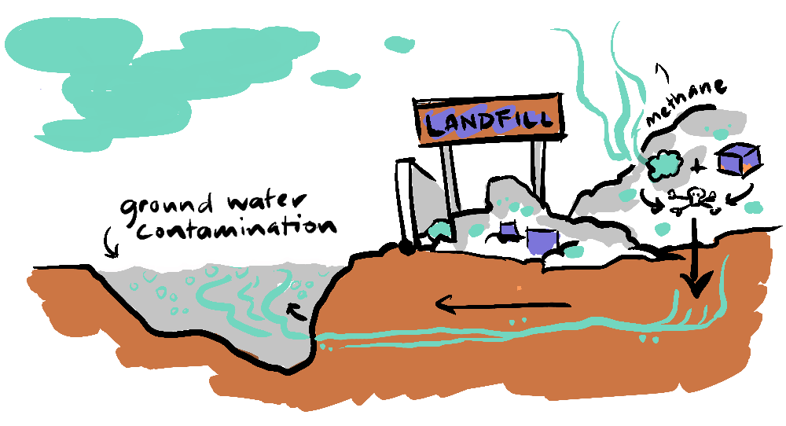

The following is a speculative post that explores the implications for a society that has decided it will not allow people to die needlessly from starvation and poverty—a society (thankfully) like ours. But do we stop there? If we only ensure a bare minimum for survival, leaving people in dire poverty, are we stifling their potential to contribute meaningfully to a thriving society?
In the spirit of non-zero-sum games, this post seeks to find solutions that combine compassion and intelligent pragmatism.

CAPITALISM & EVOLUTION
According to Adam Smith, a society should operate in such a way so as to provide…
"…not only the commodities which are indispensably necessary for the support of life, but whatever the custom of the country renders it indecent for creditable people… to be without." - Adam Smith
It was not only unacceptable to Smith to allow people to perish, but also to deny them what they need to live with dignity. But on that second point, there have been differing levels of concern about the least fortunate.
"The incentives created by economic inequality, with rewards for education, hard work, and risk-taking, are essential for creating a dynamic, innovative economy." - Gary Becker (Nobel Prize Winning Economist)
Some will reference an evolutionary mode—survival of the fittest—to justify an unsympathetic attitude to those unable to support themselves.
"While the law [of competition] may be sometimes hard for the individual, it is best for the race, because it ensures the survival of the fittest in every department." - Andrew Carnegie
I intend to make an argument that, in a world where we don't just let people die—even if someone doesn't believe dignity is a right—it is optimal to have people afforded a greater-than-subsistence level of existence.
Before going further, I'd like to present a concept from nature that can help us understand the issue more clearly.
THE RED QUEEN
In 'Alice in Wonderland', the Red Queen is riding her horse through a forest, but as she rides, the trees and all the creatures of the forest are moving in the same direction at the same speed, so she appears to stand still.
This concept, that Matt Ridley refers to as 'The Red Queen', is something that is evident in evolutionary arms races.

ARMS RACES
There are some arms races in nature where competition between two species creates a selection pressure that builds incredible strength in both parties. The rough-skinned newt is one of the most toxic animals on the planet and produces enough toxin to kill several humans, yet the common garter snake eats them with little difficulty.

That's because these two species have evolved alongside each other.
As the newt evolved a more and more powerful poison, the snake developed a greater and greater tolerance. Like with the Red Queen, relative to each other, the newt and the snake seem to be stationary—it is only once we step outside the forest that we notice they are, in fact, moving.
When a happy-go-lucky dog catches the newt, we see the consequences of this evolutionary arms race: tetrodotoxin—one of the most potent neurotoxins on earth, coming into tragic conflict with the unfortunate dog (an externality—something we'll cover later).
PROS & CONS OF COMPETITION
Competition, in the form of free-market capitalism contains a number of self-balancing subsystems that appear to magically do the work of Adam Smith's Invisible Hand. This self-interested system has, counter-intuitively, succeeded in stimulating progress and increasing the well-being of populations around the world, so much so that some would like to see its influence expanded.
Competition can also produce in us strengths that might have remained dormant were we never to compete. Competition in our markets drives down prices, forces efficiencies, and can, given the right parameters, drive innovation.
But competition can also create poison.
EXTERNALITIES
While many of free-market capitalism's subsystems self-balance, on the whole, we can observe that this is not an absolute rule—the poison of inequality is growing, and is getting out of control. Because income inequality is an externality to the standard measure of economic prosperity (GDP), other externalities, such as social well-being and the environment, suffer enormous consequences.
Externalities are hilariously lampooned in Clarke and Dawe's—The Front Fell Off episode, where Clarke tries to convince Dawe that everything is fine because a leaking oil tanker has been towed "outside of the environment."
To continue the poisonous newt metaphor, where the unfortunate dog, or human (the externality) comes into contact with the poison of the newt, the economic poison of income inequality is coming into conflict with the external world in the form of the fracturing of society.
JUST EVOLVE
And yet there is another problem, we no longer live in a world of the survival of the fittest. In the wild, the unfortunate externalities would die and the gene pool would adapt—and likewise, people in poverty would die of starvation, and the system would balance once again. But it's not acceptable for humans to die when it is possible to save them. Before we move on, it's important to ask why this is, and ask it seriously.
CAN WE JUST LET PEOPLE DIE?
When it has come to the health of the economy, the COVID-19 pandemic showed that even normally liberal and ostensibly caring people were sometimes willing to compromise on the social norm of not letting people die.
And so, I think it's important to acknowledge that politics, economics, and the work that we take part in, are all instrumental activities in service of the ultimate goal of well-being—and people needlessly dying doesn't help that ultimate goal for those that die or those that are left behind.
If your answer to the question "can we just leave people in poverty to die?" is "No", keep reading, because a lot follows from that answer.
RESTORING BALANCE WITH A VENGEANCE
If we take it as given that we do not let people die needlessly, then we are living in a very different state from that of our evolutionary past. And while we're here, the pace of change in technology also makes evolutionary forces impotent to help us adapt anyway. So, while competitive systems usually self-balance through atrophy (death of individuals), ours will not, so it is important to note that that avenue for self-balancing needs to be replaced with something else, otherwise it will come back, with a vengeance. When human systems in the past have got out of balance, the way they have often got back in balance is through war—mass death. In the wider frame, when the environment gets out of balance, its reaction is often extreme and irreversible—extinction—death with a vengeance.
So, the way I see it is we have a question with two parts.
What is the most cost-effective way of keeping everyone alive?
What mechanism do we use to maintain balance, in society, and the environment?
KEEPING EVERYONE ALIVE
It might seem as though just providing a subsistence survival budget for those who are near death would be cheapest, and would allow the magic of the market to continue creating the wealth, however unevenly distributed.
THE PEASANTS ARE REVOLTING
This approach is, however, negated by the threat of revolt. With continued inequality, a base of desperate people has in the past eventually led to terrorism and revolution. So, is there a satisfactory point where the safety net is just enough to curb revolt? Not if the gap between rich and poor is widening—you will eventually only have rich and poor and the poor will outnumber the rich by an order of magnitude. So, is it all hopeless? Are we destined for war and revolt?
THE SITUATION AT PRESENT
There's one option, which is what we have at present, which introduces some vital externalities to the equation. We have some avenues where the very rich can protect their wealth in three ways.
Employing people to protect their wealth in the form of lawyers, accountants, real estate brokers, and advertisers, and we see this—the proliferation of jobs where, at the end of the chain, they serve to protect the capital of the very wealthy at a fraction of the cost of the capital that is being protected. Perversely this is a form of wealth distribution, but it is one completely controlled by the wealthiest, they can essentially twist the taps to the minimum required to keep their reservoir full.
Secondly, they can lobby the government for lower taxes and special rights to monopolise the market.
And finally and most importantly, they can run media companies that build a narrative that convinces those at the bottom to believe that the rich, and the politicians they control, are acting in their best interests, and following a responsible and watertight economic philosophy. This also enables them to direct any aggression among the poor against each other. So, even in a democracy, it is possible to have almost half the population vote against their own best interests to the benefit of 1% of the population.
So, that's the situation we see play out. People being trapped in poverty, being convinced of untruths in the media, and voting against their own best interests. And yet, the costs of this charade are enormous, all of this money being spent on distributing misinformation, on political manipulation, on bullshit jobs designed to protect the wealth of the rich—is all meaningless and unproductive. At the end of the day it is a massive negative-sum game, with the gains going to very few people who get diminishing benefits to their well-being from the additional billions on top of the billions they already have.
BUT CAPITALISM GAVE US ALL THE STUFF
The narrative (3) feeds back onto itself, fuelling the notion of capitalism's seemingly magical qualities, reinforcing the claim that because supply and demand naturally balances, then everything in the market will balance perfectly. Part of this narrative is that the free market creates wealth and commerce, and therefore every life-improving technology is somehow a product of the market—when that is simply not true. Actually you have the government to thank for your smart phone and much else (generally the US government, through NASA and the CIA); microchips, touch screens, the accelerometer, voice recognition, the internet…!
In fact, one could argue that given that the market benefits from capitalising on any incremental improvement in a given technology, it is actually a market prerogative to slow the growth of technology to that end. Why release a phone with 5 new features when you can just R&D one and put it in a new case?
YOUR INTUITIONS MIGHT BE CORRECT
This gives us reason to be a little skeptical with claims about how much the market has given us, despite its self-serving ideology. The idea that competition, even greed is good, is counter-intuitive for a good reason.
Our intuitions tell us that competitions always come at a cost, which is why we generally avoid conflict most of the time, and cooperate when we can. And, while the costs of the competition of the market are almost invisible, they are becoming increasingly evident.

SOLUTIONS
But is there a workable solution that avoids revolution, terrorism, and war, that doesn't also require so much wasted time and resources to maintain through some meaningless charade?
Yes. But before we get to it, it is important to look at some of the other hidden costs of doing the bare minimum.
THE (EXPENSIVE) CHEAPEST OPTION
It is a fact that living in poverty lowers opportunity, motivation and even intelligence. So, by doing the bare minimum, we are actually taking human potential out of the system—resulting in freeloaders at the top, avoiding tax and hoarding capital and freeloaders at the bottom becoming a drain on the economy, health services, the legal system, and prisons. This is extremely expensive.
I just want to take a quick pause here to acknowledge that people contribute in many diverse ways to a culturally rich society and I do not mean to suggest that I believe people without the means to contribute to the economy are not valuable members of society. I am making the case in hard terms in order to be convincing to those who might have a more hard-line view of the economic value of citizens.
A SATISFICING PLAN
We've already decided that we can't let people die, and we are yet to find an optimal base level for a person, where the costs of supporting them harnesses their potential to contribute back to society. So, instead of just keeping them alive, or going further, keeping them satisfied enough not to revolt, we actually need to find a point where we are making the most out of the potential of each human, so that they are at optimal motivation, intelligence, and therefore productivity.
We are then left with two problems:
How to pay for it?
How to stop inequality growing—leading to either revolt or the perpetuation of a farcical wealth protection economy which benefits the rich at the expense of all else, including the environment.
First of all, it's important to put this expense into perspective—because it seems large. Bear in mind that there are already massive costs to do with poverty which will be saved by lifting people out of poverty, so they can contribute to society.
AN UN-SEXY OPTION
The rest of the way is simple, taxes, taxes, taxes. Boring I know, but with new, better-structured taxes it will be possible to erode wealth at the very top, to pay for a UBI that lifts everyone to a point where they can actually make decisions about their future from a position of security.
Land and Inheritance Tax: Currently, the very wealthy can use their money to generate more wealth without the need for productivity. They are incentivised to divest from funding new businesses and innovation in favour of safer, higher return static assets such as real estate. Thomas Piketty suggests that taxing capital, will reduce wealth inequality but also incentivise investment back into the working economy (to avoid it being eroded away by the capital taxes).
Destination-Based Corporate Tax: Currently, companies pay tax where their "offices" are based, which enables multi-national companies to avoid tax using tax havens. If tax were paid in the country where products were bought rather than where they were made, this sort of tax avoidance would be much more difficult.
Universal Basic Income: A UBI streamlines the process of not letting people die, eliminates poverty traps, and reduces stigma (because it is afforded to everyone). It also incentivises the creation of quality jobs by reducing the demand for jobs, giving workers more choice to do something meaningful with their lives. A UBI would also eliminate the necessity for a minimum wage, meaning that non-profit or low-profit businesses could provide lower-paid but meaningful work for people based on values they hold dear, rather than purely for the value of a pay cheque.
BUT WHAT ABOUT THE RICH?
As for the rich, they will still be rich. But they will be incentivised to move their wealth into the innovation economy, spurring on young entrepreneurs to come up with new solutions to the problems we face. The rich might also benefit by not being involved in an arms race, which (on top of creating various 'poisons' in the form of externalities) is stressful—and what's the point of being rich if it makes you stressed?
SO…
We (thankfully) don't just let people die. This means that we can't rely on evolutionary or market forces to self-balance. Thankfully we have another mechanism, called democracy, where we can vote for policies that redistribute wealth optimally, and keep the system in balance. This is not only good for economic productivity but it also serves the well-being of the humans involved—which is the whole point of having a productive and sustainable economy in the first place.